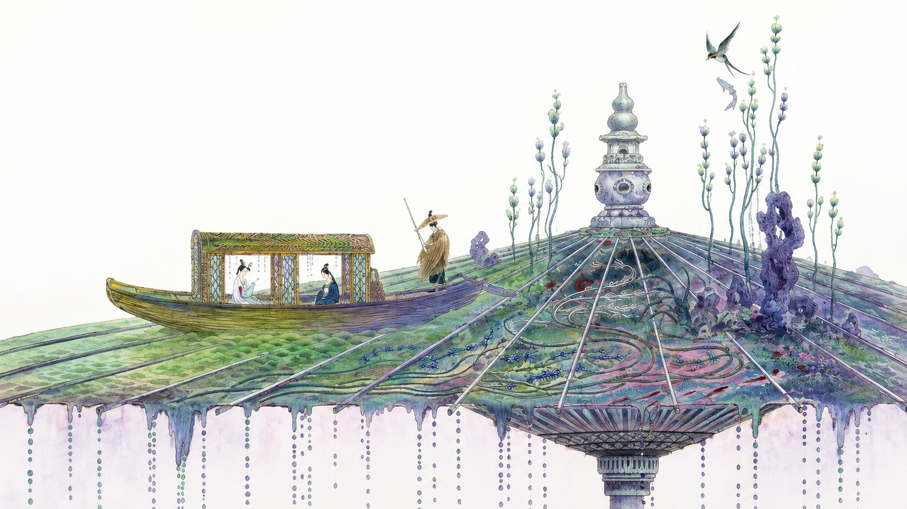
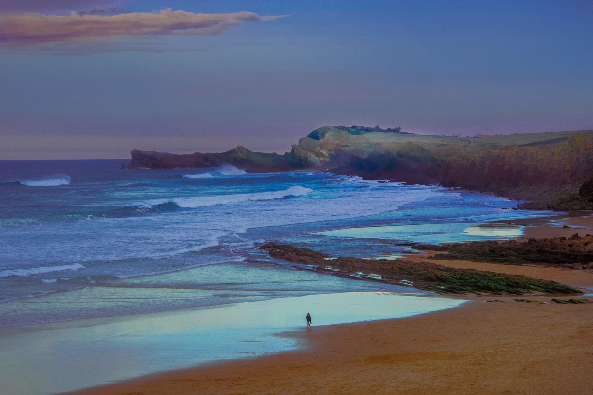

A world of your own to forge.
What will it become?
A world of your own to forge.
What will it become?
Space sensing your body,
Space healing your body,
Soulful living,

"Out of avidity to see the Immortals, to touch that more-than-human City, I could hardly sleep. And as though the Troglodytes could divine my goal, they did not sleep either."
— The Aleph


Frisson Manifesto
伟大城市，从来不是因为聚集了最多的建筑，而是因为美在走了五百年之后，选择了这里——为那些最具创造力的人，重新开始。

我们相信信'美' 本身具有迁徙的能力。
它穿越地理、战争与文明的更替,在极少数时刻停留下来，我们向它停留过的地方致敬。
佛罗伦萨曾是它的驿站,德文郡的原野、里斯本的第七座山丘、法兰西岛的森林,也都曾是。
我们植入欧洲文艺复兴四大家族Medici、Cavendish、Palmela、Montmorency的美学基因,并把它们转译为当代的建造语言。
佛罗伦萨,是 Brunelleschi 的比例、pietra serena 的青灰石、Raphael 的湿壁画,和 Boboli 花园里 Buontalenti 的人工岩窟(grotto)
查茨沃斯是一部从未写完的书,从 William Kent 的座椅、Paxton 的温室,到 Lucian Freud 的肖像
帕尔梅拉宫藏着 Anatole Calmels 的赫姆柱(herm)、trompe-l'œil 的错视、chinoiserie 的东方纹样,和 azulejos 蓝白釉瓷的温润光泽
Montmorency Écouen 是一座会呼吸的要塞,集结了整个时代最好的手-Jean Bullant 的敞廊(loggia)、Jean Goujon 的雕刻、Léonard Limosin 的利摩日珐琅、Bernard Palissy 与 Masséot Abaquesne 的陶。

我们的最终目标是重建一样更恒久、也更珍贵的东西——对人的尊重。
让艺术离开画布,进入建筑、进入光、进入身体,最终进入人的内心。

我们将当代艺术家的设计灵感注入建筑细节并由计算设计和3D墙体打印带给世界，如Jesperish的作品通过对远古未来世界的感知，探索身份、情感和符号系统，他运用象征手法，唤起人们的直觉，探索建筑、文化和环境如何塑造人类的内心世界。
真正的"更多",不是超越人,而是更深地懂得人、尊重人。
因为它是一种为人的感知而作的精密编排。
我们所超越的,是那种把人当作数据、把居所当作机器的贫乏想象。二十世纪的城市曾迷信一个隐喻:住宅是"居住的机器"。于是我们得到了高效却冷漠的空间,人成了流程里的一个变量。而我们要造的,是一个懂得感知的居所。